О сервисе
Воркер — это комплекс программ для повышения производительности вашего предприятия и существенной экономии ваших средств благодаря умному мониторингу человеческих ресурсов.
Благодаря системе Воркер Вы сможете в любой момент просмотреть статистику работы по каждому сотруднику:
- нарушал ли он рабочее расписание
- какими приложениями пользовался
- чем именно был занят (делаются снимки рабочего стола и веб-камеры)
Вы также можете заблокировать те или иные программы и сайты, и Воркер будет препятствовать работе с ними. По итогам собранной статистики формируются отчёты, которые вы можете вывести на экран Директора в один клик.
Система состоит из трёх частей: Директор, Агент и Сервер. Рассмотрим каждую из них в отдельности.
Директор — программа, которая устанавливается на рабочий компьютер или ноутбук директора предприятия. Если рабочих компьютеров более одного, то за установку на другие машины вы ничего не доплачиваете.
Директор позволяет:
- добавлять, приостанавливать и удалять новых Агентов
- задавать правила для всего предприятия, а также каждого подразделения и сотрудника в отдельности
- просмотривать собранные Агентами данные в удобном виде.
О том, как установить и настроить Воркер Директор, смотрите в разделе «Директор».
Агент — программа для сбора данных о работе каждого из ваших сотрудников и передачи этой информации директору предприятия. Незаметна в работе. Вся собранная статистика зашифровывается и кладётся на диск, откуда с заданной периодичностью отправляется на сервер. О том, как установить Агента на компьютере у сотрудника, подробно рассказано в разделе «Агент».
Сервер - на сервере хранятся собранные Агентами данные:
- о программах и сайтах, которыми пользовался сотрудник в течение дня
- снимки экрана и веб-камеры
- настройки и правила программы Директор
Все данные на серверах хранятся в зашифрованном виде. Они расшифровываются уже непосредственно у вас на компьютере вашим индивидуальным паролем перед выводом на экран.
Пробный период
На ряду с демонстрационым режимом работы, система Воркер так же имеет пробный период, который позволяет в полном объеме оценить все преимущества программы.
Используйте пробный период для того, чтобы опробовать программу в условиях Вашей компании. Это позволит организовать контроль за работой двух сотрудников на протяжении 14 дней.
В течении пробного периода на программу не накладываются какие либо функциональные ограничения.
Для того чтобы воспользоваться пробным периодом скачайте установочный файл Директора и следуйте инструкциям из видео:
Демо-режим
Для того, чтобы вы могли принять решение о покупке программы, и научиться ею пользоваться, был создан демонстрационный режим. В этом режиме вам доступно для просмотра всё то же, что и обычным пользователям, кроме возможности создать нового Агента. Так как статистики по вашей компании у вас на данном этапе ещё нет, здесь отображены обезличенные данные за последние полгода.
Так же Вы можете испытать программу в "боевых" условиях воспользовавшись «Пробным периодом».
Демонстрационный режим не ограничен по времени: вы можете находиться в нём столько, сколько захотите.
- Создавайте категории
- Меняйте правила
- Выводите на экран различные виды отчётов
- Группируйте данные, как вам удобно
- Управляйте снимками экрана/с веб-камеры
- и т.д.
Всё это даст вам очень наглядное представление о том, с чем вы будете работать впоследствии.
Чтобы воспользоваться демо-режимом скачайте установочный файл Директора.
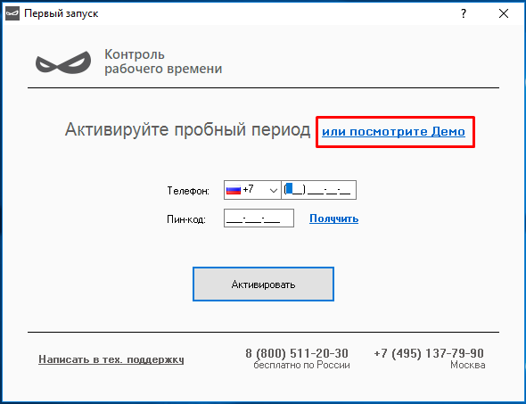После установки программы при первом запуске выберите соответсвующий пункт.
Облачная версия
Комплекс программ по учёту и контролю рабочего времени Воркер поставляется в двух версиях: локальной и облачной.
Облачная версия предполагает:
- Наличие базы данных в облачном хранилище Microsoft Azure (для вашей статистики).
- 250 Мб места для снимков экрана (в расчёте на одного сотрудника).
- Архив статистики за последний год для показа в календаре (детальные отчёты доступны за последние 3 месяца).
- Бесплатную техническую поддержку по e-mail и телефону на всё время обслуживания.
- Регулярные обновления, которые устанавливаются в фоновом режиме без вашего участия, и не замедляют вашу работу.
Облачная версия выгодна вам по причинам:
- Она стоит дешевле.
- Не требует покупки и настройки специального оборудования.
- Также не требует содержания в штате специалиста для осуществления технического обслуживания.
- Вы ничего не платите за новые версии, сколько бы их ни вышло.
- От покупки до начала сбора статистики проходит не более 10 минут.
Для облачной версии предусмотрено три типа подписок: на 3, 6 и 12 месяцев.
Обратите внимание! Так как данные закачиваются на сервер и скачиваются с него по сети Интернет, скорость работы системы находится в непосредственной зависимости от ширины канала, которую предоставляет ваш интернет-провайдер.
Локальная версия
В локальной версии системы присутствует всё то же самое, что и в облачной, но со своими особенностями. Если вы выбираете этот вариант, то вам дополнительно придётся покупать или переоборудовать сервер под нужды системы. Для установки локальной версии вам потребуется:
- Полностью настроенный и готовый к работе сервер с СУБД MS SQL Server 2012.
- Также настроенный и готовый к работе FTP-сервер.
- Доступ в интернет для связи с сервером лицензирования.
У локальной версии есть свои преимущества:
- Подписка на значительно более долгий срок — 200 месяцев с момента покупки.
- Сравнительно большая скорость работы, т.к. данные передаются к серверу и обратно по локальной сети.
- Бесплатная поддержка клиента по e-mail и телефону
- Вы ничего не платите за новые версии, сколько бы их ни вышло.
- Обновления в течение года с момента покупки в рамках текущей версии. Делаются вручную и требуют доступа к серверам по RDP или TeamViewer с правами Администратора.
Стоит отметить, что конфиденциальность данных обеспечивается и в том, и в другом случае. Какую бы версию вы ни выбрали, мы можем вас заверить, что ваши данные не попадут к третьим лицам.
Безопасность
Конфиденциальность ваших данных является одной из наших главных забот, так как мы ясно представляем себе, какие катастрофические последствия для бизнеса может иметь утечка информации.
Для сохранения ваших данных в строжайшем секрете мы в нашей работе используем один из самых популярных в мире алгоритмов, известный своей стойкостью (название в целях безопасности не разглашаем).
Данные статистики, собранные на вашем предприятии Агентами, шифруются ещё до отправки на наши серверы. Соответственно, на серверах они также хранятся в зашифрованном виде, а расшифровываются уже непосредственно в Директоре вашим индивидуальным паролем.
Это делается для того, чтобы только вы могли иметь полный доступ к вашей статистике. Все остальные, включая нас, владельцев и сотрудников сервиса, к вашим данным доступа не имеют.
Возможно, просматривать данные прямо на сайте из-под учётной записи, как это часто делается у некоторых других сервисов, и является несколько более удобным, но такой способ одновременно и гораздо более опасен. Данные легко могут попасть в третьи руки, и быть использованы в недобросовестных целях, что нанесёт урон вашему бизнесу.
Агент
Агент работает незаметно для сотрудника, его значок не появляется ни в трее (если не используется «открытый режим»), ни в списке установленных программ. Он потребляет очень незначительное количество ресурсов, и на скорость работы компьютера не влияет.
Для установки Агента следуйте инструкциям из видео:
Удаление
Удаление Воркер.Директор
Чтобы деинсталлировать программу Директор, найдите в меню «Пуск» папку «Воркер», кликните на неё, и нажмите «Деинсталлировать Воркер Директор 3» (цифра меняется в зависимости от текущей версии).
Вы также можете удалить программу через «Панель управления» — «Установка и удаление программ», или с помощью какой-либо сторонней утилиты.
Удаление Воркер.Агент
Чтобы удалить Агента, кликните правой кнопкой на имени сотрудника, и выберите пункт «Удалить Агента с компьютера». В настройках появится уведомление об удалении Агента, и после синхронизации с базой данных программа сама удалится с компьютера сотрудника. Исполняемый файл будет удалён после перезагрузки.
Общие настройки системы
Нажав на кнопку в левом верхнем углу главного окна программы, откроется окно основных настроек системы.
Общие->Параметры
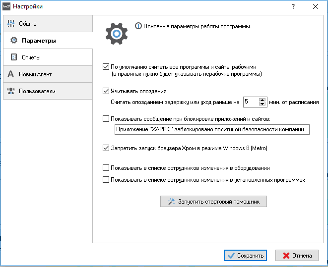По умолчанию считать все программы и сайты рабочими.
При включении этой опции, все программы и сайты по умолчанию считаются "рабочими", т.е. относятся к процессам, которые связанны с выполнением непосредственных обязанностей сотрудника. В этом случаее в правилах нужно указывать программы, которые не относятся к рабочим процессам.
И наоборот, если опция отключена, все программы считаются "не рабочими", в правилах нужно указывать программы, которые относятся к рабочим процессам.
Учитывать опоздания.
При включении этого пункта, программа будет отслеживать опоздания и уход с работы раньше положенного времени. Можно указать, какое отклонение от штатного расписания считать нарушением. Отметки о нарушениях рабочего расписания отображаются иконкой в отчете «Календарь».
Показывать сообщение при блоировке приложений и сайтов.
При включенной этой опции, система будет выводить на экран сообщение при попытке сотрудника получить доступ к заблокированной программе или сайту. Текст сообщения вы можете произвольно менять.
Показывать в списке сотрудников изменения в оборудовании/установленых программах
Программа отслеживает, какое оборудование и программное обеспечение установлено на компьютерах сотрудников и в случае изменения оповещает соответсующей иконкой под именем сотрудника в программе Директор.
Общие->Отчеты
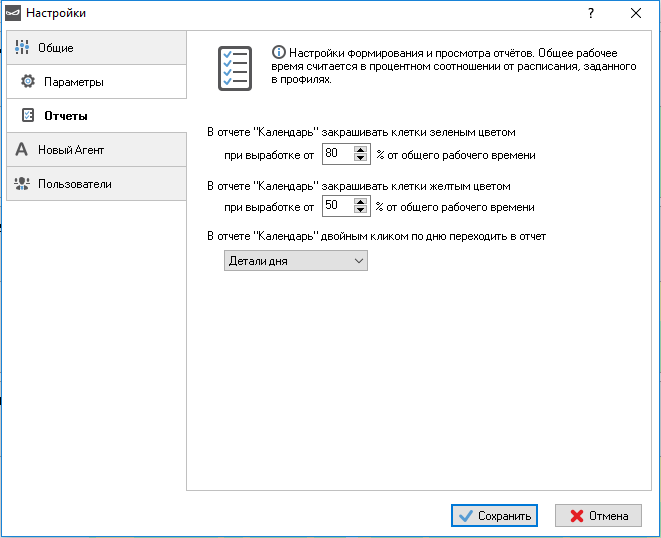Отчеты">Здесь нужно отметить, при каком процентном соотношении рабочий день считается продуктивным (окрашивается зелёным цветом в отчете "Календарь"), а при каком — непродуктивным (окрашивается жёлтым).
Ниже вы можете задать, какой отчёт открывается по двойному клику на любой ячейке в отчете "Календарь".
Общие->Новый Агент

Во вкладке «Новый Агент» задаются настройки для нового Агента, определяющие поведение Агента на компьютере сотрудника по умолчанию. Впоследствии эти настройки можно править во вкладке «Настройки Агента» в профиле соответствующего сотрудника. Подробно эти настройки разобраны здесь.
Пользователи->Новый пользователь
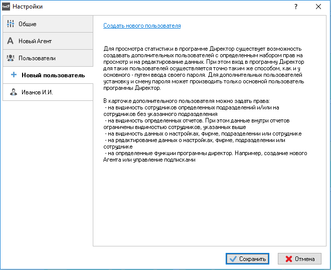Новый пользователь">Для просмотра статистики в программе Директор добавлена возможность создавать дополнительных пользователей с определенным набором прав на просмотр и на редактирование данных. При этом вход в программу Директор для таких пользователей осуществляется точно таким же способом, как и у основного - путем ввода своего пароля. Для дополнительных пользователей установку и смену пароля может производить только основной пользователь программы Директор.
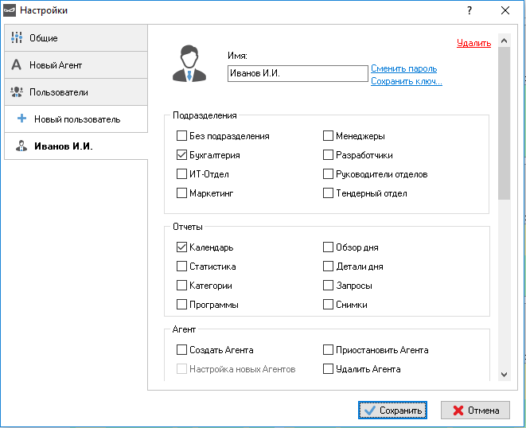Иванов">Обязательно такому сотруднику необходимо передать файл private.key, который можно сохранить выбрав соответсвующий пункт в карточке пользователя.
В карточке дополнительного пользователя можно задать права:
- на видимость сотрудников определенных подразделений и/или на сотрудников без указанного подразделения
- на видимость определенных отчетов. При этом данные внутри отчетов ограничены видимостью сотрудников, указанных выше
- на видимость данных о настройках, фирме, подразделении или сотруднике
- на редактирование данных о настройках, фирме, подразделении или сотруднике
- на определенные функции программы директор. Например, создание нового Агента или управление подписками
Профиль сотрудника
Чтобы попасть в настройки профиля сотрудника, кликните правой кнопкой по колёсику настроек рядом с его именем в списке, или дважды на самом элементе. Вы также можете кликнуть по имени сотрудника правой кнопкой мыши, и выбрать пункт «Профиль» в меню.
Сотрудник->Профиль
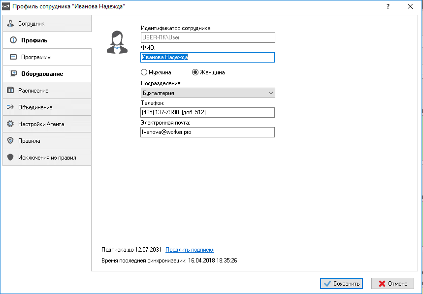профиль">В профиле сотрудника заполняется справочная информация о сотруднике.
- ФИО
- Подразделение, в котором работает сотрудник
- Контакты для связи
Профиль сотрудника заполняется для Вашего удобства, на работу программы эти данные не влияют.
Сотрудник->Программы
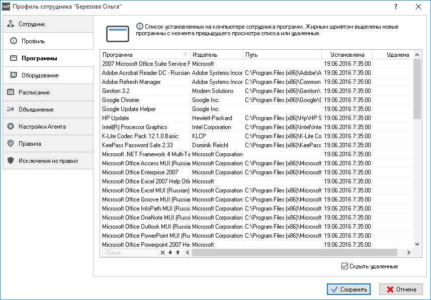Программы">В этой вкладке содержится список установленных на данный момент программ. С помощью снятия фильтра "Скрыть удаленные" можно посмотреть всю историю установки и удаления программ у данного сотрудника. Если произошли какие либо изменения, они будут отмечены жирным шрифтом
Сотрудник->Оборудование

Во этой вкладке представлен перечень, установленного в компьютер сотрудника, оборудования. Принцип работы вкладки идентичен «Программам».
Расписание
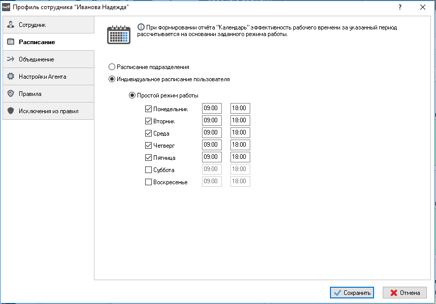В этой вкалдке назначается индивидуальное расписание для сотрудника.
Это очень удобно, если вы используете услуги приходящих фрилансеров, или часть ваших сотрудников работает по гибкому графику.
Если сотрудник работает по общему расписанию, установите флажек на пункте "Расписание подразделения"
Объединение

Если ваш сотрудник работает на двух или более компьютерах сразу, вы можете объединить профили, и в этом случае статистика будет общая. В любой момент вы сможете разделить эти профили обратно.
Для объединения профиелй поставьте галочки напротив имён сотрудников, чьи профили нужно объединить. В профиле появится соответствующее указание.
Внимание! Так как на каждом компьютере у сотрудника может быть настроен индивидуальный профиль, настройки на этих компьютерах могут отличаться. Так, например, список «Нерабочих» программ или расписание может быть иным.
Объединение->Исключить из учета
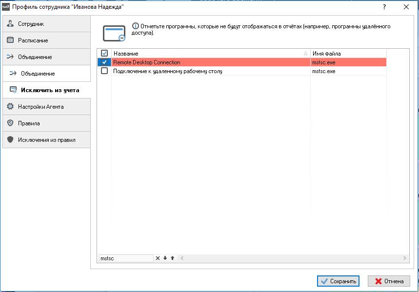исключить из учета">В этой вкладке вы можете отметить те программы, которые не будут учитываться в отчётах — например, программы удалённого доступа. Чтобы система не насчитывала двойное время в случае, если человек заходит на второй компьютер через RDP. В отчёте «Детали дня» эти программы будут показаны, но на учёт времени не повлияют.
Настройки Агента->Учет времени
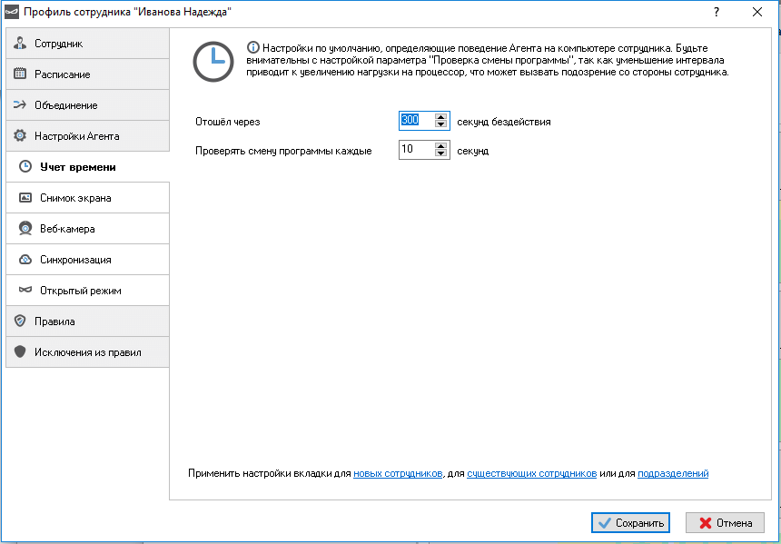Учет времени">В этой вкладке можно указать, после какого интервала система будет считать, что сотрудник отошёл (то есть, не шевелил мышкой и не нажимал никаких клавиш). В отчётах это отображается как простой, и маркируется белым цветом.
Вторым пунктом можно указать, через какие промежутки времени Воркер будет проверять, не сменил ли сотрудник приложение/программу, в которой он сейчас работает.
Настройки Агента->Снимок экрана
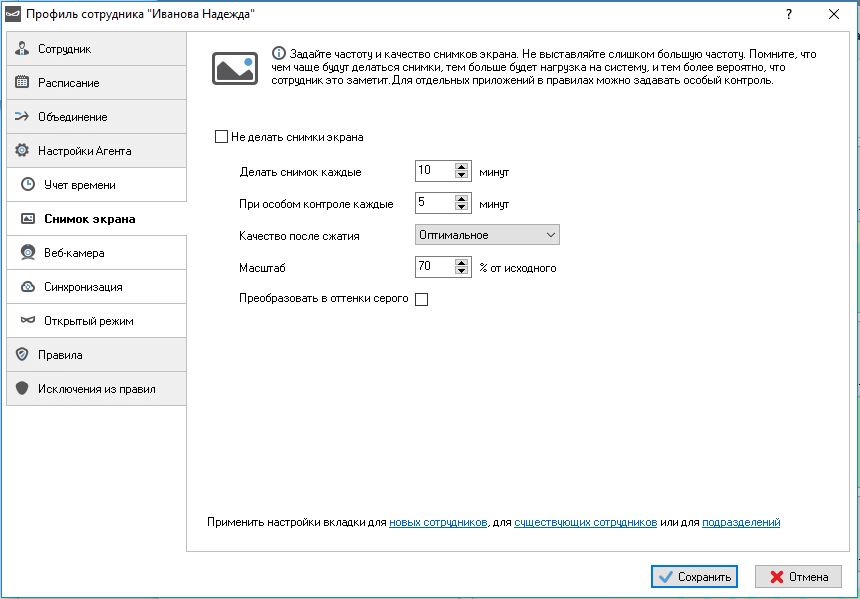Снимок экрана">Во вкладке «Снимок экрана» вы определяете, как часто будут делаться снимки экрана сотрудника, а так же их качество.
Настройки Агента->Веб-камера
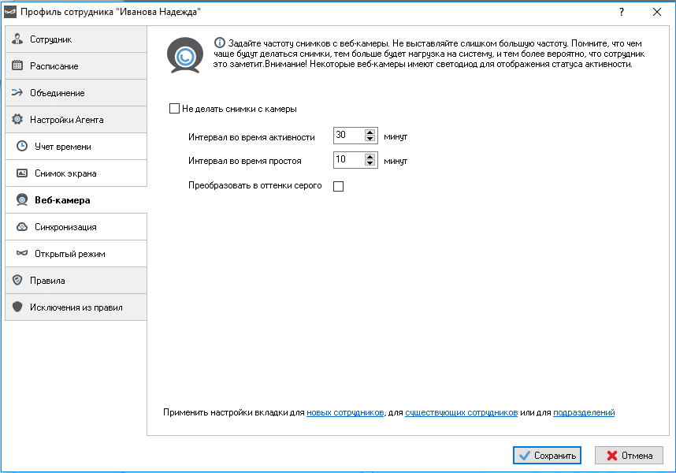Веб-камера">Так же и как и предыдущем пункте, настраивается интервал и качество снимков с web-камеры.
Владельцы облачной версии не должны забывать о том, что чем чаще будут делаться снимки, и чем лучшего они будут качества, тем быстрее будет заполнено всё отведённое на сервере место. Более ранние снимки будут автоматически удаляться.
Настройки Агента->Синхронизация
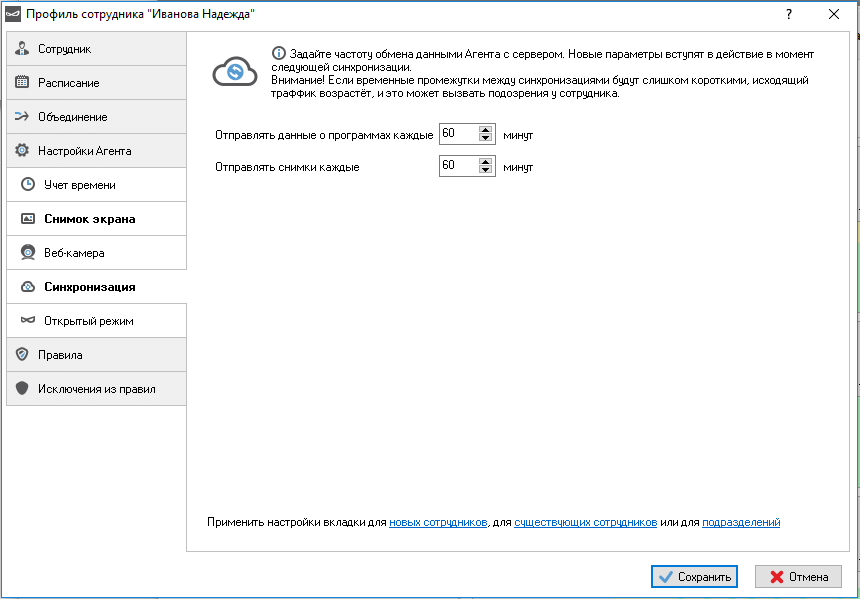Синхронизация">Во вкладке "Синхронизация" отмечается, с какой периодичностью Агентам будут отправляться новые настройки, правила и исключения, заданные вами в Директоре. Допустим, выставлен интервал в 60 минут — и это означает, что новые параметры будут применены только в момент следующей синхронизации, которая происходит раз в час, а не мгновенно.
Настройки Агента->Открытый режим
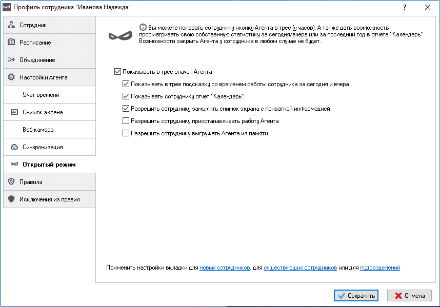Открытый режим">По умолчанию Агент работает на компьютере сотрудника скрытно, не показывая никаких окон и уведомлений. Однако во вкладке «Открытый режим» вы можете показать иконку Агента в трее (у часов). А также дать возможность просматривать свою собственную статистику за сегодня/вчера или за последний год в отчете «Календарь».
Кроме того, в некоторых случаях в снимки экрана попадают личные фотографии или какая-либо другая приватная информация, поэтому мы опционально добавили возможность сотруднику скрыть такие снимки от директора. При этом снимок не будет удален, а будет произведено «замыливание» картинки.
Также можно разрешить сотрудникам на время приостанавливать сбор статистики или вовсе выгрузить Агента из памяти. При закрытии Агента сотруднику будет предложено создать иконки на рабочем столе и в панели быстрого запуска приложений. Данные опции полезны, если сотрудники работают с домашнего компьютера и помимо работы занимаются на нем личными делами.
Правила
Пункт "Правила" по внешнему виду и функционалу одинаков для фирмы в целом, подразделения и отдельного сотрудника. Окно имеет следующий вид:
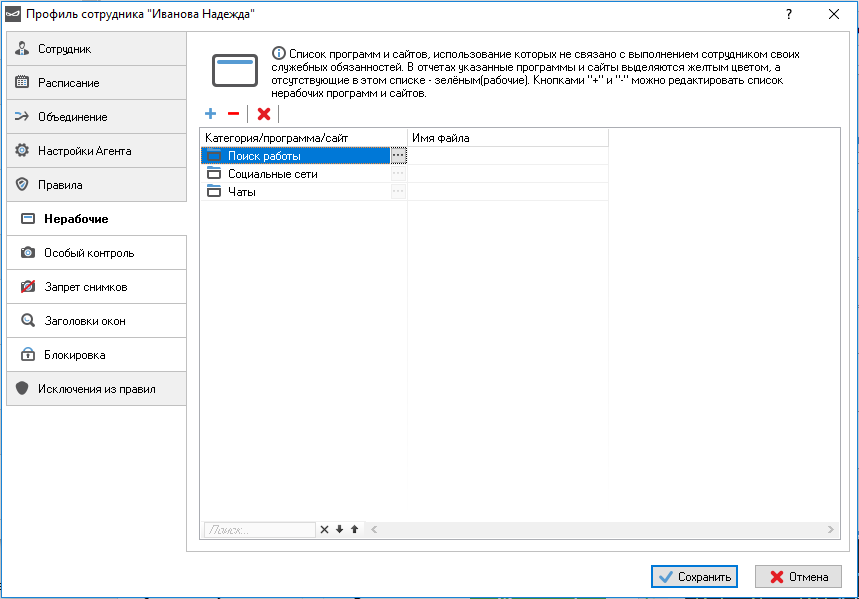В этом окне можно назначить следующие правила для целых категорий программ и сайтов:
- Нерабочие - категории программ, которые не относятся к выполнению сотрудником его непосредственных обязанностей.
Если не отмечен пункт "По умолчанию считать все программы и сайты рабочими" в Общих настройках системы, то этот раздел будет называться "Рабочие" и необходимо выбирать категории программ, которые необходимы сотруднику для выполнения поставленных перед ним задач
- Особый контроль - здесь следует выбрать категории программ/сайтов из которых Вы хотите получать более частые снимки.
Переодичность, с которой будут производится снимки с экрана монитора, настраивается в Профиле сотрудника в разделе Настройки Агента -> Снимок экрана
- Запрет снимков - категории приложений и сайтов, снимки из которых Вам не нужны
- Заголовки окон - категориии приложений/сайтов, для которых Вы хотите отслеживать заголовки окон. Наример, отслеживая заголовки окон офисных приложений, Вы будете знать с каким докуметом работал сотрудник.
- Блокировка - какие категории программ/сайтов будут запрещены для запуска
Для добавления нового правила нужно нажать "+" или выполнить двойной клик левой кнопки мышки на пустом поле.
Откроется окно со списком категорий
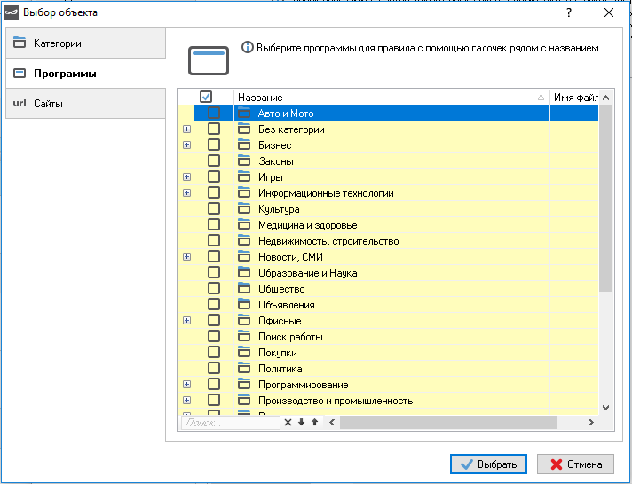В правила можно добавить как отдельно категорию программ (вкладка "Программы"), категорию сайтов (вкладка "Сайты"), так и общую категорию, которая включает в себя и программы и сайты (вкладка "Категории")
Отчет «Календарь»
В отчёте «Календарь» вы можете увидеть помесячно сгруппированные данные о работе каждого сотрудника за последний год, а также о работе одного подразделения и предприятия в целом — за выбранный месяц.

Дважды кликнув по ячейке в календаре, вы сможете ознакомиться с подробностями за выбранный вами день. Нажав правую кнопку мыши появится контекстное меню с возможностью выбрать отчет для перехода независимо от общих настроек.
Наведите указатель мышки на ячейку в календаре, чтобы увидеть краткую статистику: во сколько сотрудник в этот день пришёл на работу, во сколько ушёл, какое количество часов он отработал продуктивно.
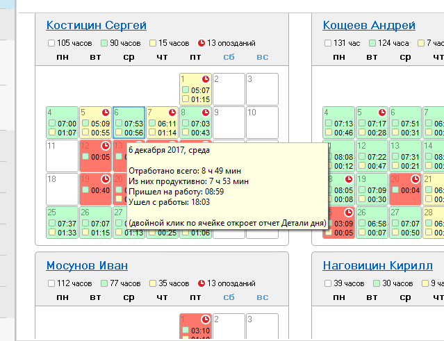Ячейки в календаре раскрашены в разные цвета:
- Зелёнй - продуктивные дни
- краснй - непродуктивные
- жёлтый - промежуточные
- Белый - простои и отсутствие на рабочем месте
На вкладке «Отчёты» в «Общих настройках системы» вы можете указать, какой процент выработки в день считается продуктивным, среднепродуктивным и непродуктивным. (По умолчанию при выработке от 80% ячейка окрашивается в зелёный, от 50% до 80% — в жёлтый, и меньше 50% — в красный).
Отчет «Статистика»
В отчёте «Статистика» отображается, кто и сколько пользовался программами/сайтами из определенной категории. Эти данные выводятся только по фирме в целом и по отделам. Если нажать на стрелочку рядом с названием категории, то можно увидеть какими именно программами/сайтами из этой категории пользовались сотрудники и сколько времени.
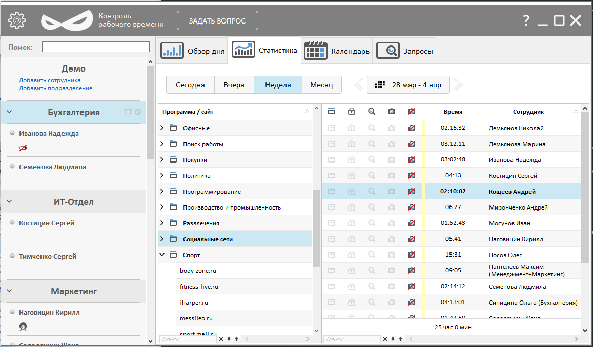Двойной клик по имени сотрудника перенаправит вас к отчёту «Детали дня» по выбранному сотруднику, отфильтрованные по данной программе/сайту.
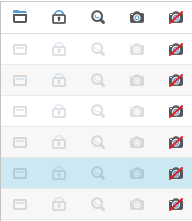Помимо колонок с именами сотрудников и временем, затраченным ими на то или иное приложение, в таблице присутствуют также колонки правил. Каждое правило обозначено соответствующей иконкой. Слева направо: «В рабочие процессы», «Заблокировано», «Следить за заголовками окон», «Особый контроль», «Не делать снимки».
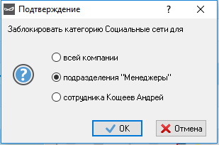Двойной клик по пустой ячейке таблицы названием программы создаёт новое правило, после этого полупрозрачная иконка станет непрозрачной.
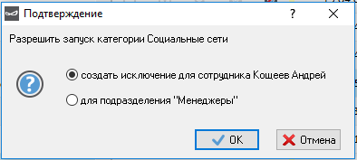Если правило для этого действия уже задано, система предложит его удалить, иконка вновь станет полупрозрачной
Чтобы открыть посещённый сотрудником сайт в интернете, нажмите Ctrl (все ссылки станут подчёркнутыми), и не отпуская его, кликните по ссылке — сайт откроется в браузере.
Для перемещения программ и сайтов по категориям вы также можете кликнуть правой кнопкой мыши по названию в таблице, и выбрать категорию, в которую нуобходимо поместить программу/сайт
Отчет «Обзор дня»
Этот отчёт может строиться либо для фирмы/подразделения за один день, либо для сотрудника в заданном диапазоне дат.
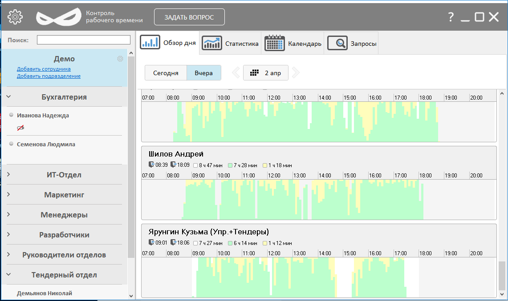Данные выводятся в виде гистограммы. Этот отчёт показывает:
- Время прихода и ухода сотрудника на работу/с работы.
- Сколько времени сотрудник потратил на рабочие процессы(зелёные участки на гистограмме) и сколько на нерабочие (жёлтые участки на гистограмме).
- Сколько времени компьютер простаивал (белые участки на гистограмме).
Отчет «Поисковые запросы»
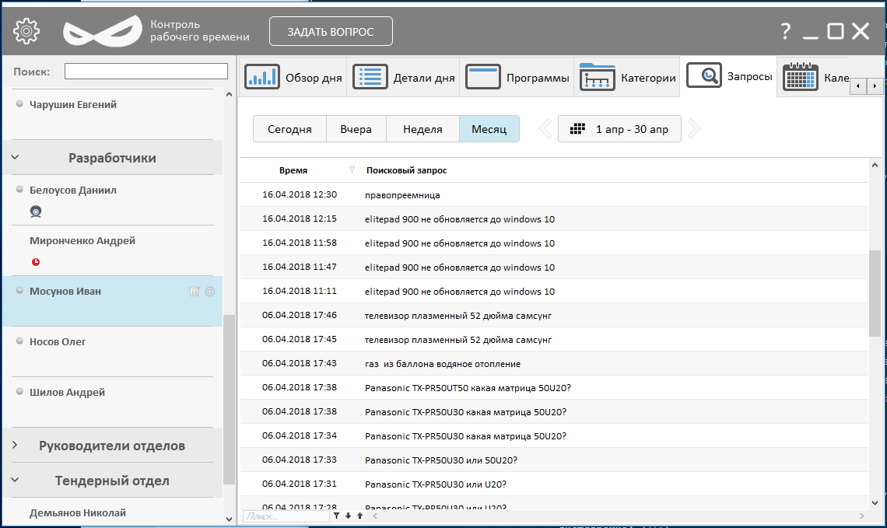Отчет "Поисковые запросы" позволяет узнать, какие именно запросы сотрудник вводил в поисковую строку. Запросы собираются со всех популярных поисковых систем.
Отчет «Категории»
Этот отчёт выводится исключительно по отдельным сотрудникам, и только за один день. Он показывает, программы из каких категорий использовал сотрудник в течение того или иного рабочего дня, и какие сайты он посещал. В подвале отчета находится суммарное время по отчету, учитывая введенный фильтр по записям.
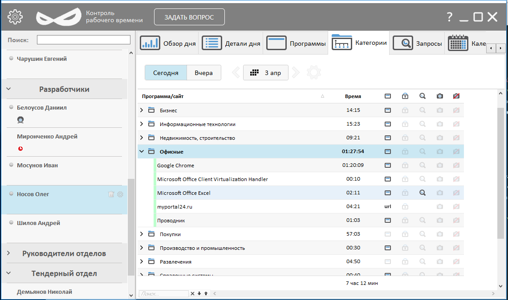Двойной клик по названию программы или сайта откроет отчёт «Детали дня» с фильтром по этой программе. Вы также можете кликнуть по названию программы, сайта либо категории правой кнопкой мыши, и выбрать нужный вам пункт в контекстном меню.
Отчет «Программы»
Этот отчёт выводится исключительно по отдельным сотрудникам, и только за один день. Он показывает, программы из каких категорий использовал сотрудник в течение того или иного рабочего дня, и какие сайты он посещал. В подвале отчета находится суммарное время по отчету, учитывая введенный фильтр по записям.
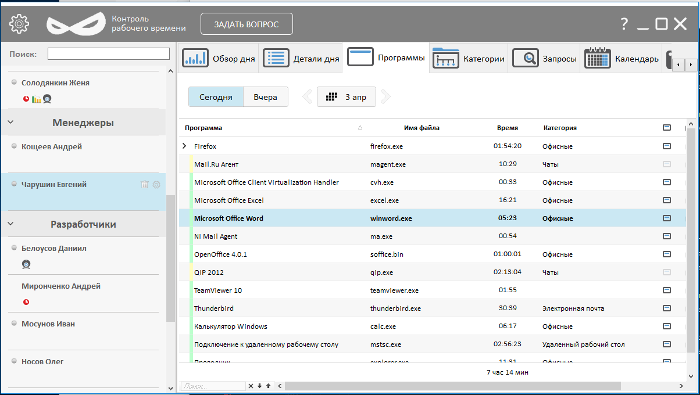Здесь вы также можете создавать и редактировать правила, как и в «Статистике». Делается это либо двойным кликом по иконке с изображением, либо правой кнопкой мыши на программе с выбором соответствующего пункта в контекстном меню.
Кликните два раза по названию программы/сайта, чтобы перейти к отчёту «Детали дня» с фильтром по ним.
Отчет «Детали дня»
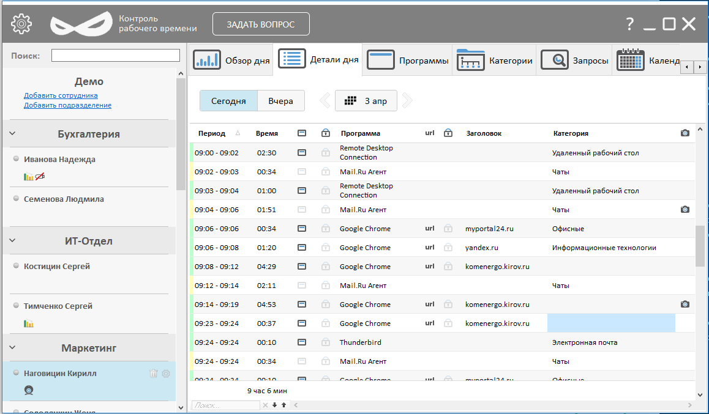Детали дня — самый подробный из всех отчётов: здесь фиксируется каждое действие сотрудника в течение рабочего дня. Данные выводятся по отдельным сотрудникам за указанную дату.
Как и в «Статистике», вы можете создавать и удалять правила прямо в таблице. Кликните правой кнопкой мыши по названию приложения, и выберите нужный пункт в контекстном меню. Возможен и другой вариант: дважды кликните левой кнопкой мыши в соответствующей колонке с правилом.
Самый правый столбик содержит перечень снимков экрана или снимков с веб-камеры. Двойной клик по иконке фотоаппарата покажет сделанный в указанное время снимок экрана.
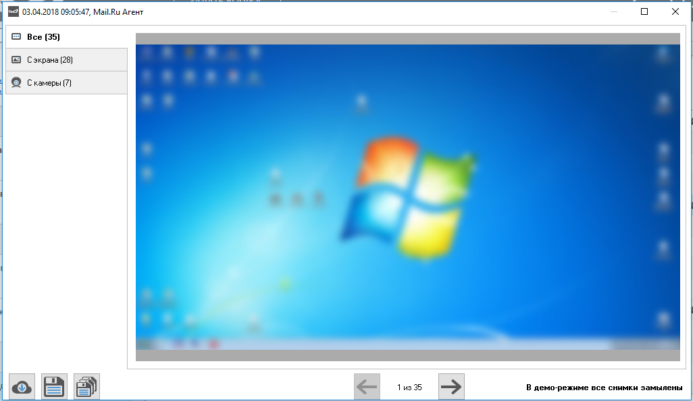Слева во вкладках вы можете задать, какие снимки вы хотите просматривать — с экрана, с веб-камеры, или и то и другое вместе.